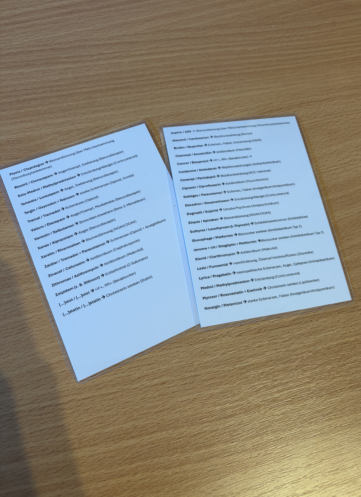

Wesentliche Dokumente nach Thema sortiert für schnelle Konsultation vor Ort
Interpretation von EKG-Aufzeichnungen, häufige Probleme.
PDF ansehenHäufige Medikamente bei Patienten.
PDF ansehenPädiatrische Notfälle und Behandlungen.
PDF ansehenAusdrucken & Verwenden zum Auswerten von ECGs
Du kannst deine eigenen benutzerdefinierten Schnellreferenzkarten erstellen und mitführen!
Vorteil: Wasserfest, praktisch, schnell einsatzbereit und robust für den Einsatz vor Ort!

Beispiel: Laminierte Schnellreferenzkarten im praktischen Format